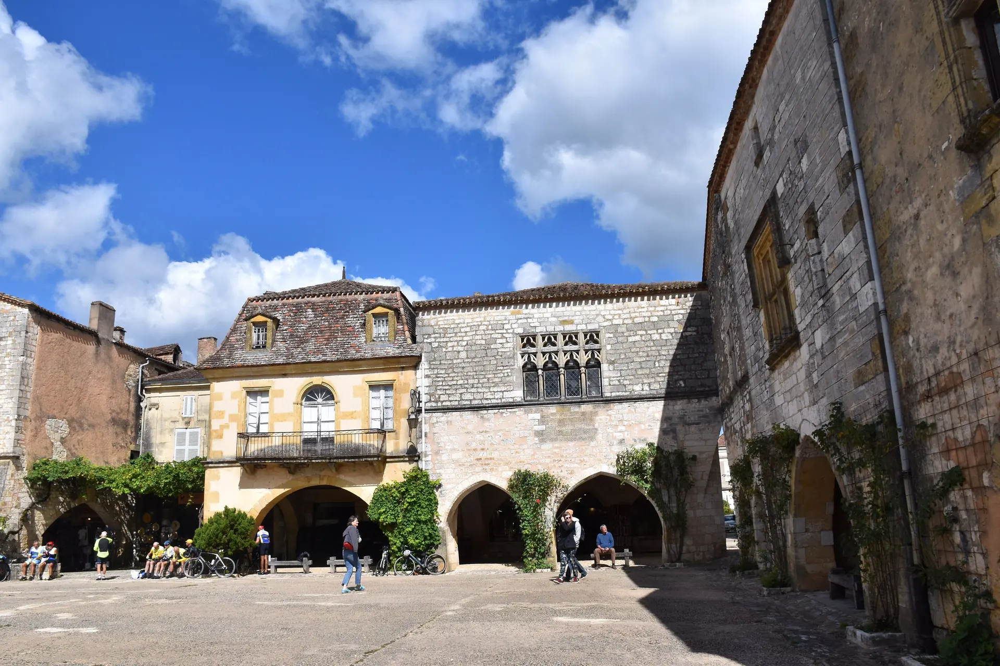
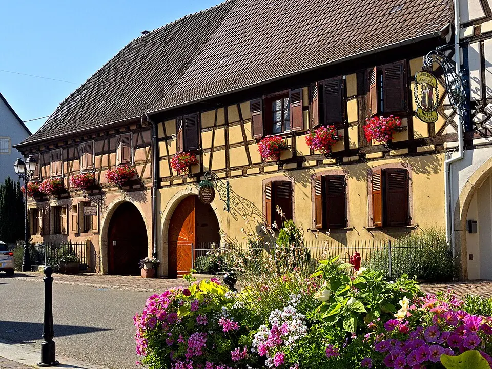
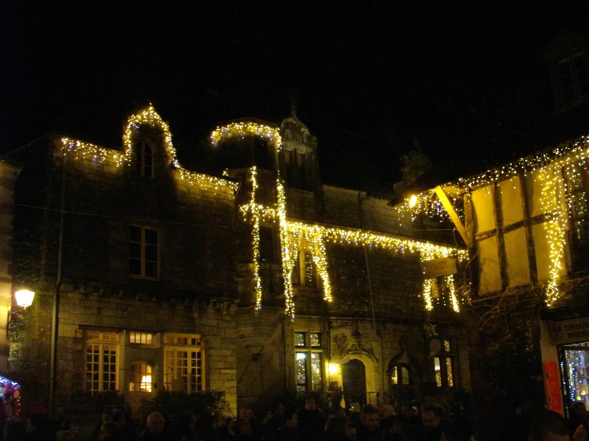
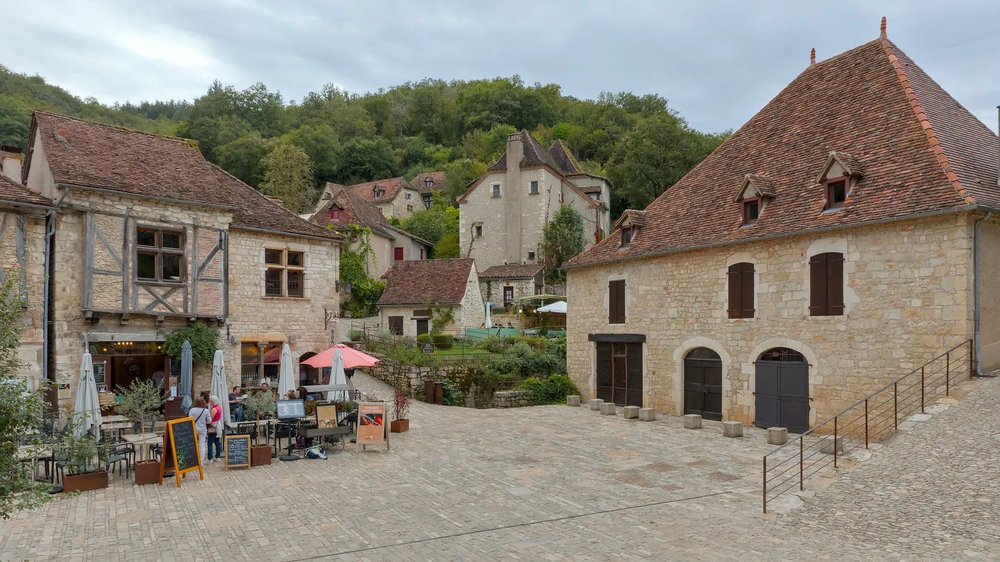
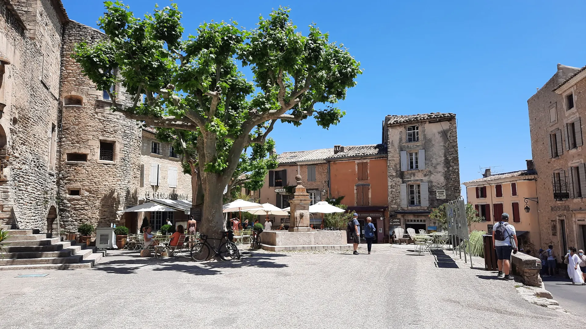
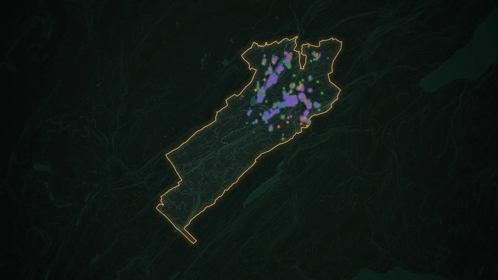

Les habitants redécouvrent leur territoire
Qui répare une chaudière à côté de chez moi ? Où trouver un cadeau fait ici ? Qui est ouvert ce soir ? Une réponse en une phrase, sur une carte, en trois langues pour vos visiteurs.
Des bourgs vivants, des savoir-faire transmis, des commerçants qui tiennent le lien entre les habitants. Où que vous soyez en France, terricom met chacun d’eux en vitrine dès le premier jour, et donne à vos élus les moyens de faire rayonner ce qui fait la fierté de votre territoire.
Derrière chaque vitrine de vos communes, il y a une histoire : une fromagerie qui fait vivre des éleveurs, un garage qui dépanne tout le canton, une coiffeuse qui connaît chaque famille. C’est votre territoire. C’est aussi le fruit de l’engagement de ses élus, mandat après mandat.
Pourtant, en ligne, il reste souvent invisible : des fiches éparpillées, des annuaires jamais à jour, des entreprises que personne ne trouve. terricom rassemble tout le territoire en un seul lieu, à votre nom, à vos couleurs.
Ce que terricom change pour les élus
Qui répare une chaudière à côté de chez moi ? Où trouver un cadeau fait ici ? Qui est ouvert ce soir ? Une réponse en une phrase, sur une carte, en trois langues pour vos visiteurs.
Leur fiche existe dès le premier jour, offerte par la collectivité. Elles n’ont rien à payer, rien à signer. Celles qui le souhaitent vont plus loin, sans engagement.
Campagnes, lettre aux habitants, circuits, emploi : la collectivité anime et mesure. Chaque trimestre, un rapport clair pour le conseil communautaire.
Ce que vous voyez est l’application réelle, filmée sur notre territoire de démonstration : les Lacs et Montagnes du Haut-Doubs. La vôtre sera à votre nom, avec vos communes et vos entreprises.
Bastides et bocages, vallées et littoraux, massifs et plaines : il n’y a pas deux territoires semblables. Votre portail prend vos couleurs, vos photos, vos mots et vos catégories d’activité. Ce qui compte, c’est ce qui fait votre fierté.

Alsace
Bretagne Corrèze
Corrèze
Lot
Provence Haut-Doubs
Haut-DoubsLes plateformes d’hier attendaient que les commerçants s’inscrivent. Ils ne l’ont pas fait. terricom part du registre officiel des entreprises (base SIRENE de l’Insee) : chaque commerce, artisan, producteur et prestataire de vos communes a sa fiche avant même le lancement.

Notre territoire de démonstration, les Lacs et Montagnes du Haut-Doubs : 1 968 entreprises en vitrine, chacune à sa place sur la carte.
Sur notre territoire de démonstration : 3 753 établissements du registre SIRENE examinés, 1 968 fiches en vitrine dès l’ouverture (données publiques de l’Insee, septembre 2026).
L’enjeu pour la communauté de communes, ce que chacun y gagne, et l’application réelle sur notre territoire de démonstration : le portail des habitants, le tableau de bord, les campagnes, les communes, les entreprises.
Vous avez peut-être connu, ou entendu parler, des boutiques en ligne locales lancées ces dernières années. La Cour des comptes l’a écrit en 2023 : elles n’ont répondu aux attentes ni des habitants ni des commerçants.
Nous avons retenu la leçon. terricom ne vend rien en ligne, ne prélève aucune commission et ne demande à personne d’adhérer. Il met en avant, il relie, il fait circuler : entre la collectivité, les communes, les entreprises et les habitants.
Pourquoi c’est différentChaque entreprise, chaque commune, chaque savoir-faire, à égalité.
Un portail commun, où la plus petite commune a sa place.
Campagnes, circuits, agenda : la collectivité donne le rythme.
Les habitants, les visiteurs, les nouveaux arrivants, les employeurs.
Une politique commerciale visible, mesurable, présentable en conseil.
DécouvrirUn back-office simple : campagnes préparées en une phrase, données toujours à jour.
DécouvrirUne page par commune, un espace pour chaque mairie, le mot du maire.
DécouvrirUne fiche offerte, des outils pour attirer, sans engagement ni commission.
DécouvrirLe portail, le back-office de la communauté, un espace pour chaque mairie, les fiches de toutes vos entreprises, l’hébergement et l’accompagnement. Nous préparons avec vous la note pour le bureau et les éléments de délibération.
Vos communes, vos entreprises, votre carte : vous découvrez votre futur portail, déjà rempli, lors d’une présentation de trente minutes.
Nous vous fournissons la note de présentation, une proposition adaptée à votre territoire et les éléments de délibération.
Paramétrage à vos couleurs, formation des agents et des mairies, courrier d’invitation aux entreprises, kit de lancement.
Campagnes, lettre aux habitants, bilans trimestriels : un interlocuteur dédié reste à vos côtés.
Nous préparons la démonstration sur vos communes et vos entreprises, avant même notre premier rendez-vous.

.jpg){kind=link}